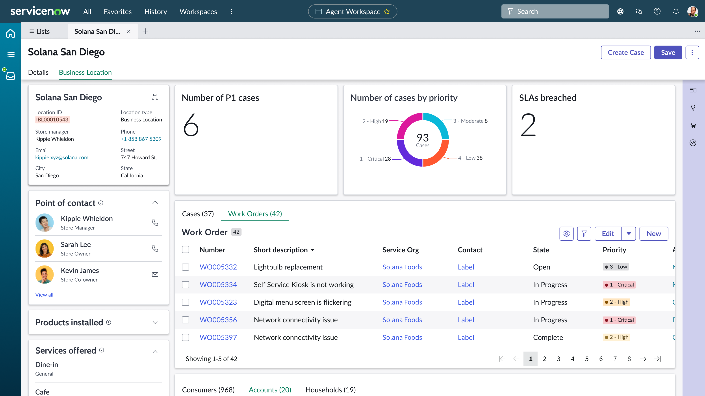

ServiceNow · CSM Customer Ops · 2022
Customer 360: one view of the customer, across every industry.
A ServiceNow surface that shows a customer and everything around them: products, services, relationships, and insights. Business Location 360 shipped as the first Entity 360 product. The work here is how we got there: facilitation, vision, and release.

The problem
Products, services, relationships, and insights were scattered across separate ServiceNow records. Customer Ops needed one reusable 360 view that could support Business Locations, Accounts, Customers, Households, and future entities.
My role
Sole design partner, brought in to lead Customer 360. I defined and validated the concepts, partnered with engineering on the MVP, and created the north-star vision that shaped the product roadmap.
The three lenses
One project, told three ways.
Facilitation
A two-stage co-creation program across industry designers, PMs, and engineering to build one horizontal product.
Vision
Entity 360: a north star we could actually believe, checked with stakeholders and real customers.
Release
Shipping the first product, Business Location 360, within the platform's real capabilities.
The context
A foundation many industries would build on.
Customer 360 sits inside a larger effort called Entity 360: Business Location 360, Account 360, Customer 360, and Household 360. CSM Customer Ops sits on the Core CSM Platform and feeds the industry verticals. I was the only design partner on the product. I made and tested the concepts, shipped the MVP with engineering, and kept a longer-term vision on the roadmap.

Who it serves
Many industries, a handful of personas.
Financial Services
Account 360 and branch support for relationship managers, bank branches, brokerage, and agency.
Government
Constituent 360 and (inter)agency support for state and county agencies.
Healthcare
Patient 360 and hospital support for healthcare workers, clinics, pharmacies, and labs.
Retail & Hospitality
Customer 360 and store support for franchises, real estate, and automotive dealerships.
Education
Student 360 and campus support for universities, colleges, and departments.
+ Telco & more
The same template stretched to each vertical's data density and priorities.
The framing
How might we enable customer-facing personas to…
…deliver the best customer experience through Purchase, Onboarding, Usage, and Post-Sales. Every concept had to hit three goals.
See it in one place
Get customer information without hopping tabs while they are already in a support task.
Decide with reality
Make decisions from information that matches what is actually happening on the ground.
Act on it
Use those views to start work, both proactive and reactive.
Lens 01 · Facilitation
A horizontal product is built in a room.
To test the concepts and find what was common across industries, I ran a two-stage co-creation program. I started with the industry designers, then brought in PMs, engineering leads, and customers.

Kick-off
Build the relationship, set objectives, and walk everyone through the co-creation process.
Co-create
Participants share their industry, use-cases & personas; we showcase the 360 and enrich it together.
Deep-dive
Detail and define the final industry-specific template, down to the special widgets.
What the sessions taught me
Industry priorities
Verticals have different focus; uptake roadmaps are complex and long-term.
Scalability
Different use-cases mean the solution must scale both up and down.
Unique needs
Each industry has unique problems that require unique solutions.
Awareness & support
Make sure people know a 360 exists, and help verticals while they adopt it.
Lens 02 · Vision
Entity 360: an ideal you can actually ship.
As product partner I drove the vision: an ideal we could still believe, checked with stakeholders, then shaped into a north star we could ship in a few releases. It had to hold patterns across industries. The useful move was a reusable “carve-up”: a consistent set of regions any vertical could adapt.

The vision applied across entity types

Validated with real customers
“You are going in the right direction. It meets my expectations quite well.”
Customer validation session
“It will help customer-focus teams and business roles drive proactive growth conversations.”
Customer validation session
B2B leads
B2B is the most prominent relationship, then B2C and B2B2C.
Density varies
Info density differs by industry, so components expand, collapse, and search.
Activity on the right
Account activity belongs in the right contextual panel as second-level detail.
Persona layouts
Persona-based layouts and re-orderable components proved very useful.
Lens 03 · Release
Business Location 360, shipped.
Then we shipped. I made the release-specific, high-fidelity designs for Business Location 360, the first product in the Entity 360 family. It had to work in ServiceNow's Agent Workspace. I worked flows, then pages, then components with engineering. As the only designer on it, I often acted as a product manager too.

Before / after
From scattered tabs to one context-aware view.
Customer info lived across related tabs. Lots of clicks and context-switching. No visual sense of relationships, hierarchy, or journey. Case and customer were two separate blobs.
One 360 view: identity, KPIs, cases, consumers, and activity in context. The layout scales to complex Service Orgs and Location Accounts, not only individuals.

Outcome
Business Location 360 shipped as the first Entity 360 product.
A checked north star across entity types, and a co-creation method the verticals could keep using.
A checked north star
A full Entity 360 library (Account, Consumer, Household, Patient, Service Org, and more) confirmed by real customers.
A repeatable process
A cross-industry co-creation method and a template system others could keep building on.
A horizontal product only works if the verticals help shape it. The useful vision was the one we could ship. I was the only designer, so I drove the release.